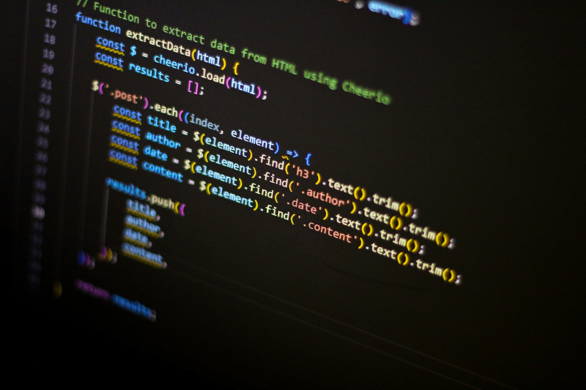

h1~6까지는 제목을 나타내는 태그
태그 u는 뭘까요? -> 밑줄입니다
html에서 줄바꿈을 하려면 br이라는 태그를 쓰시면 됩니다
그러나 br태그는 줄바꿈을 많이하고 싶을 때 쓰면 되지만 P태그는 정해져있는 공간만큼 여백이 생기고 단락이 끝나기 때문에 시각적으로 자유롭지 못할 수 있습니다.
그럴 때는 css라는 문법을 쓰면 됩니다.
css에서 태그와 태그 사이에 여백을 나타내는 태그가 있습니다 그건바로 style 이라는 태그입니다.
css문법은 html과는 다른 컴퓨터 언어의 문법이 들어오게 약속되어 있습니다
어떻게 쓰냐면 style태그에 margin-top이라는 커맨드를 치고 원하는 픽셀만큼 띄우면 됩니다
예시로 style margin-top:50px을 넣는다면 윗줄과 50픽셀 정도 차이를 낸 문단이 밑에 달릴 것 입니다. 이렇게요!!좀 더 화려하게 꾸미고 싶으면 img를 쓰면 돼
